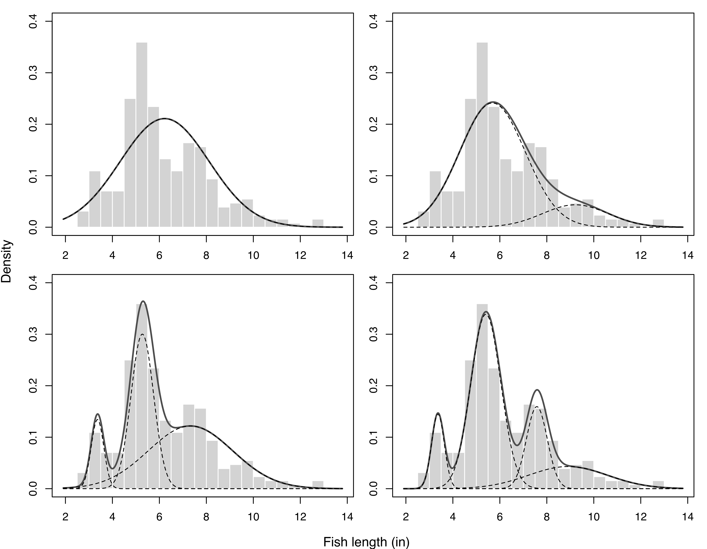
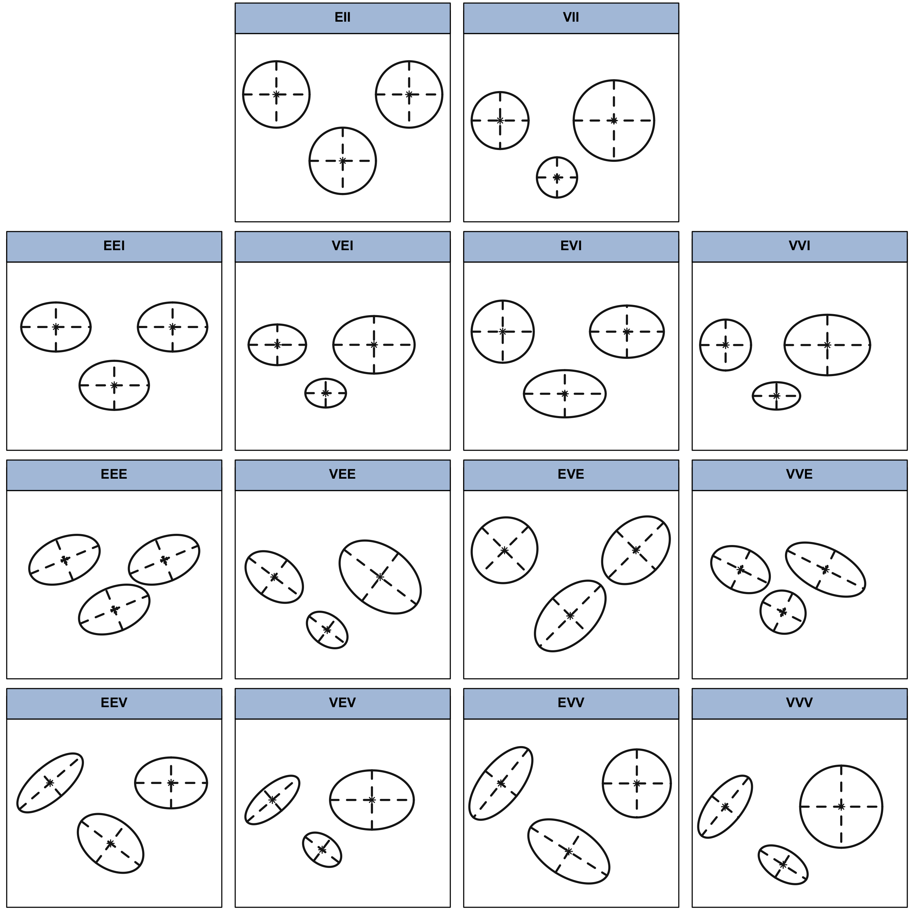
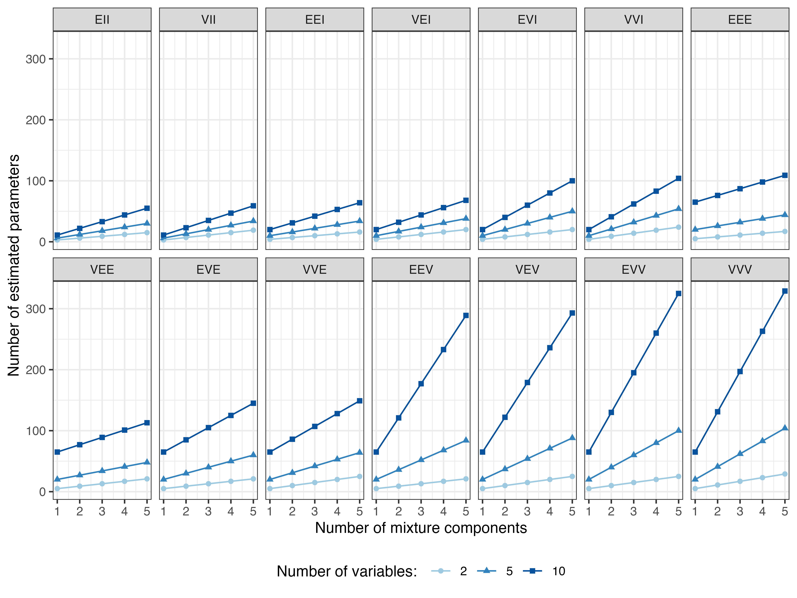
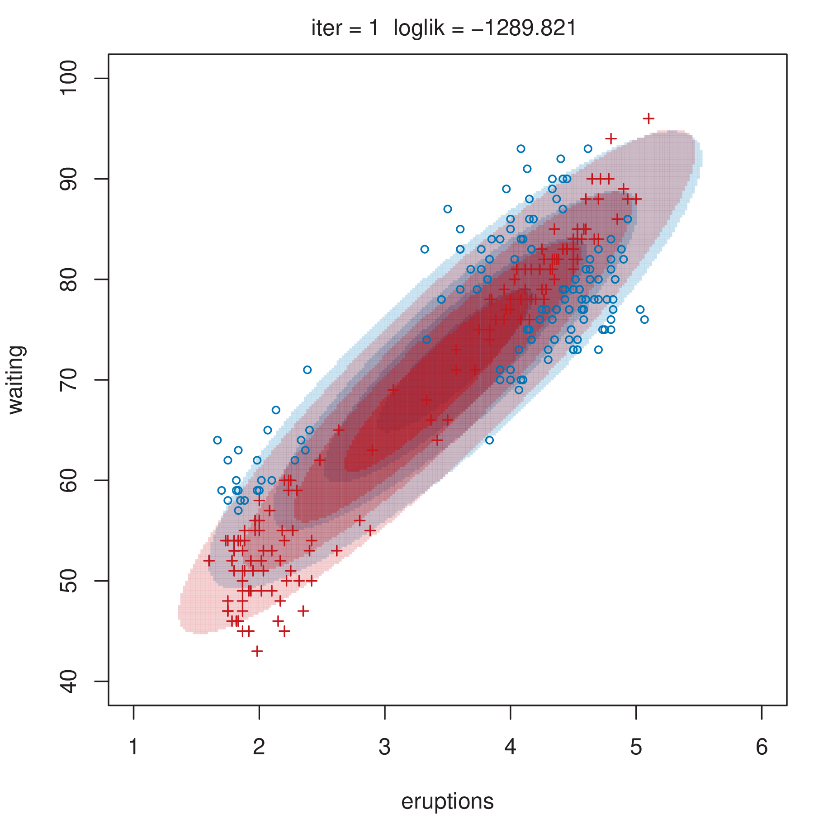
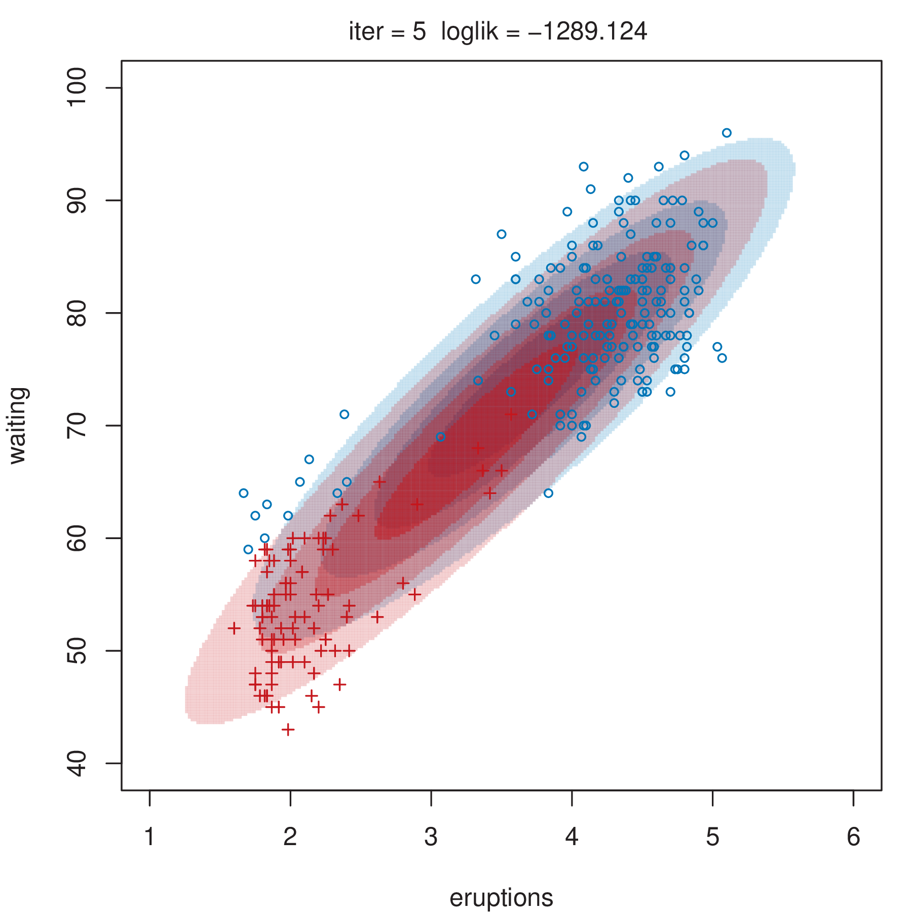
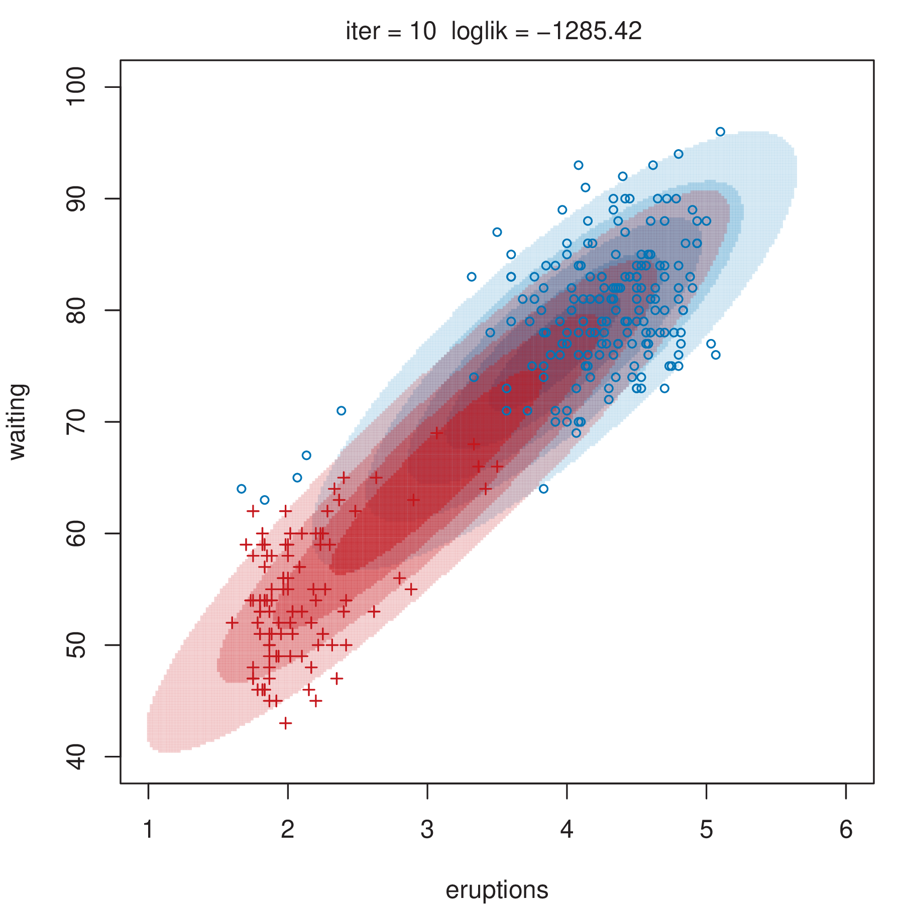
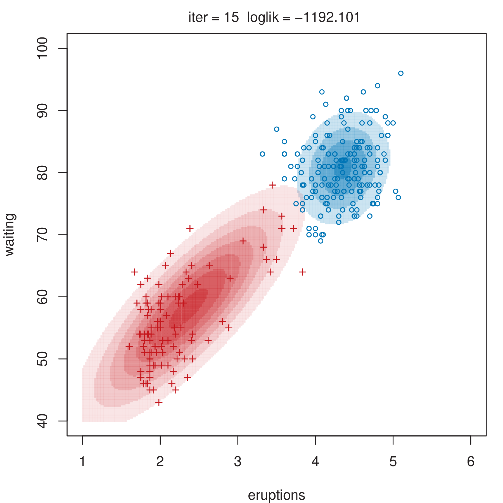
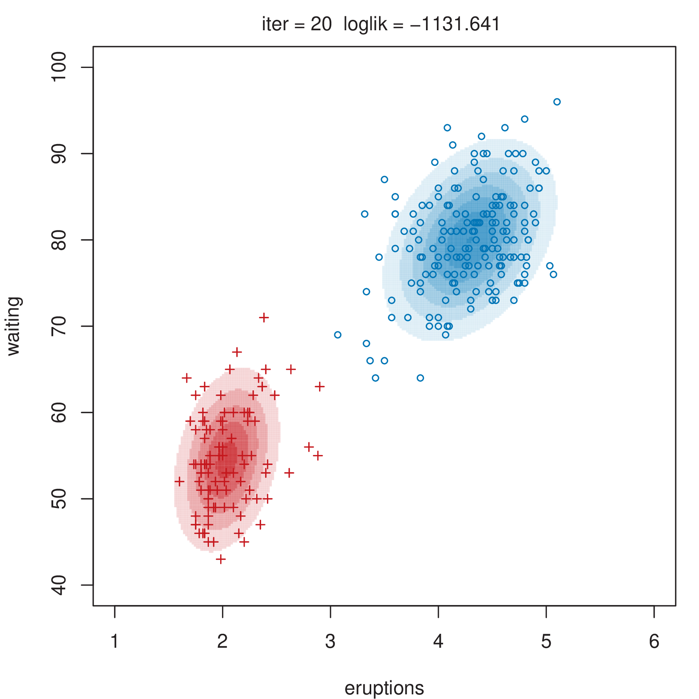
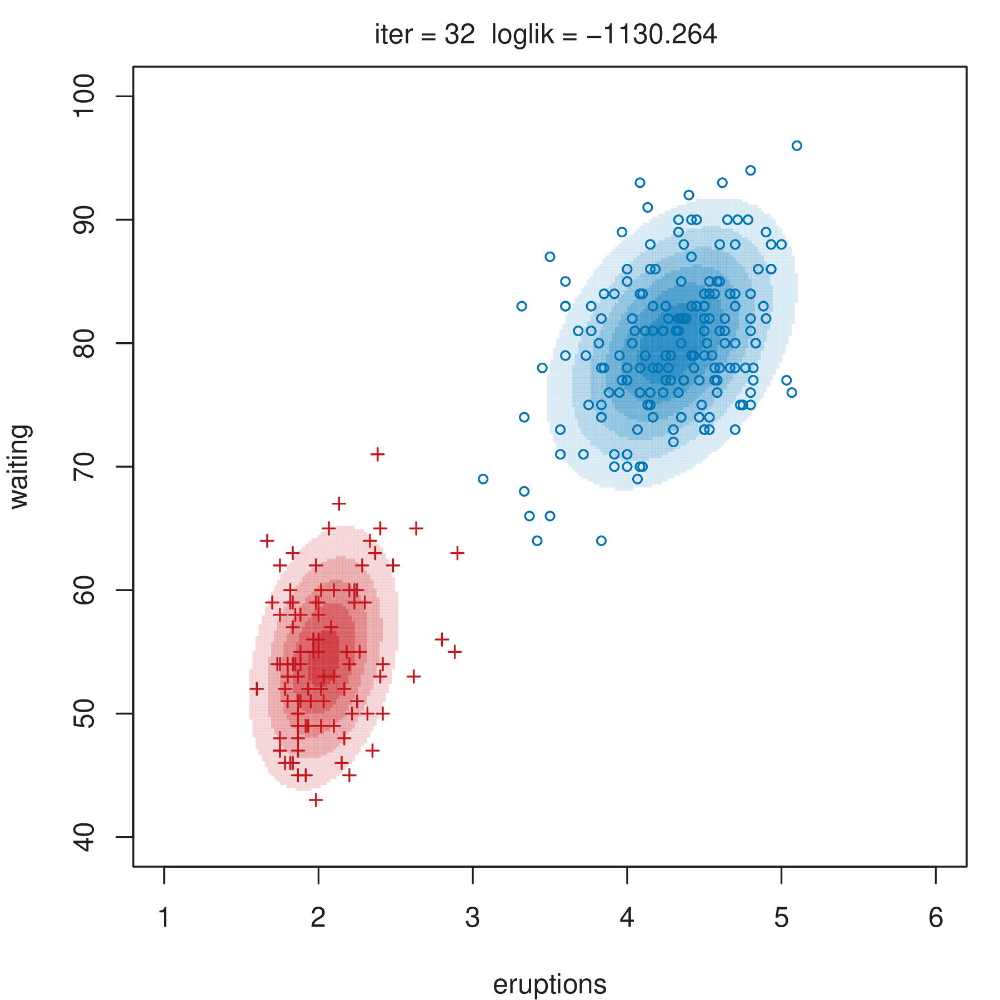

2 Finite Mixture Models
\[ \DeclareMathOperator{\Real}{\mathbb{R}} \DeclareMathOperator{\Proj}{\text{P}} \DeclareMathOperator{\Exp}{\text{E}} \DeclareMathOperator{\Var}{\text{Var}} \DeclareMathOperator{\var}{\text{var}} \DeclareMathOperator{\sd}{\text{sd}} \DeclareMathOperator{\cov}{\text{cov}} \DeclareMathOperator{\cor}{\text{cor}} \DeclareMathOperator{\range}{\text{range}} \DeclareMathOperator{\rank}{\text{rank}} \DeclareMathOperator{\ind}{\perp\hspace*{-1.1ex}\perp} \DeclareMathOperator{\CE}{\text{CE}} \DeclareMathOperator{\BS}{\text{BS}} \DeclareMathOperator{\ECM}{\text{ECM}} \DeclareMathOperator{\BSS}{\text{BSS}} \DeclareMathOperator{\WSS}{\text{WSS}} \DeclareMathOperator{\TSS}{\text{TSS}} \DeclareMathOperator{\BIC}{\text{BIC}} \DeclareMathOperator{\ICL}{\text{ICL}} \DeclareMathOperator{\CV}{\text{CV}} \DeclareMathOperator{\diag}{\text{diag}} \DeclareMathOperator{\se}{\text{se}} \DeclareMathOperator{\Cov}{\text{Cov}} \DeclareMathOperator{\boot}{\text{boot}} \DeclareMathOperator{\LRTS}{\text{LRTS}} \DeclareMathOperator{\Model}{\mathcal{M}} \DeclareMathOperator*{\argmin}{arg\min} \DeclareMathOperator*{\argmax}{arg\max} \DeclareMathOperator{\vech}{vech} \DeclareMathOperator{\tr}{tr} \]
This chapter gives a general introduction to finite mixture models and the special case of Gaussian mixture models (GMMs) which is emphasized in this book. It describes common methods for parameter estimation and model selection. In particular, the maximum likelihood approach is presented and the EM algorithm for maximum likelihood estimation is detailed. The Gaussian case is discussed at length. We introduce a parsimonious covariance decomposition that allows one to regularize the estimation procedure. The maximum a posteriori procedure is described as a way to obtain probabilistic clustering. Methods for model selection based on information criteria and likelihood ratio testing are presented. Finally, inference on parameters is discussed by adopting a resampling-based approach.
2.1 Finite Mixture Models
Mixture models encompass a powerful set of statistical tools for cluster analysis, classification, and density estimation. They provide a widely-used family of models that have proved to be an effective and computationally convenient way to model data arising in many fields, from agriculture to astronomy, economics to medicine, marketing to bioinformatics, among others. Details of finite mixture models and their applications can be found in Titterington, Smith, and Makov (1985), Geoffrey J. McLachlan and Basford (1988), G. J. McLachlan and Peel (2000), Bishop (2006, chap. 9), Frühwirth-Schnatter (2006), McNicholas (2016), Bouveyron et al. (2019). In this book our interest in mixture models will be mostly in their use for statistical learning problems, mostly unsupervised, but also supervised.
A mixture distribution is a probability distribution obtained as a convex linear combination1 of probability density functions2.
The individual distributions that are combined to form the mixture distribution are called mixture components, and the weights associated with each component are called mixture weights or mixture proportions. The number of mixture components is often restricted to being finite, although in some cases it may be countably infinite.
The general form of the density of a finite mixture distribution for a \(d\)-dimensional random vector \(\boldsymbol{x}\) can be written in the form \[ \sum_{k = 1}^G \pi_k f_k(\boldsymbol{x}; \boldsymbol{\theta}_k), \tag{2.1}\] where \(G\) is the number of mixture components, \(f_k(\cdot)\) is the density of the \(k\)th component of the mixture (with \(k=1, \dots, G\)), the \(\pi_k\)’s are the mixture weights (\(\pi_k > 0\) and \(\sum_{k=1}^G \pi_k = 1\)), and \(\boldsymbol{\theta}_k\) represents the parameters of the \(k\)th density component. Typically, the component densities are taken to be known up to the parameters \(\boldsymbol{\theta}_k\) for \(k=1,\dots,G\).
It is usually assumed that all of the densities \(f_k(\boldsymbol{x};\boldsymbol{\theta}_k)\) belong to the same parametric family of distributions, but with different parameters. However, in some circumstances, different parametric forms are appropriate, such as in zero-inflated models where a component is introduced for modeling an excess of zeros. In Section 7.1, we introduce an additional component with a Poisson distribution to account for noise in the data.
Mixture distributions can be used to model a wide variety of random phenomena, in particular those that cannot be adequately described by a single parametric distribution. For instance, they are suitable for dealing with unobserved heterogeneity, which occurs when a sample is drawn from a statistical population without knowledge of the presence of underlying sub-populations. In this case, the mixture components can be seen as the densities of the sub-populations, and the mixing weights are the proportions of each sub-population in the overall population.
Example 2.1 Using Gaussian mixtures to explain fish length heterogeneity
Consider the fish length measurements (in inches) for 256 snappers attributed to Cassie (1954). The data, available as Snapper in the R package FSAdata (Ogle 2022), show a certain amount of heterogeneity with the presence of several modes. A possible explanation is that the fish belong to different age groups, but age is hard to measure, so no information is collected about this characteristic. Mixtures of Gaussian distributions with up to four components were fitted to this data, and the resulting mixture densities are shown in Figure 2.1.
2.1.1 Maximum Likelihood Estimation and the EM Algorithm
Given a random sample of observations \(\boldsymbol{x}_1, \boldsymbol{x}_2, \dots, \boldsymbol{x}_n\), the likelihood of a finite mixture model with \(G\) components is given by \[ L(\boldsymbol{\Psi}) = \prod_{i=1}^n \left\{ \sum_{k=1}^G \pi_k f_k(\boldsymbol{x}_i ; \boldsymbol{\theta}_k) \right\}, \] where \(\boldsymbol{\Psi}= (\pi_1, \dots, \pi_{G-1}, \boldsymbol{\theta}_1, \dots, \boldsymbol{\theta}_G)\) are the parameters to be estimated. The corresponding log-likelihood is \[ \ell(\boldsymbol{\Psi}) = \sum_{i=1}^n \log\left\{ \sum_{k=1}^G \pi_k f_k(\boldsymbol{x}_i ; \boldsymbol{\theta}_k) \right\}. \tag{2.2}\] The maximum likelihood estimate (MLE) of \(\boldsymbol{\Psi}\) is defined as a stationary point of the likelihood in the interior of the parameter space, and is thus a root of the likelihood equation \(\partial \ell(\boldsymbol{\Psi}) / \partial \boldsymbol{\Psi}= \boldsymbol{0}\) corresponding to a finite local maximum. However, the log-likelihood in Equation 2.2 is hard to maximize directly, even numerically (see G. J. McLachlan and Peel 2000, sec. 2.8.1). As a consequence, mixture models are usually fitted by reformulating the mixture problem as an incomplete-data problem within the EM framework.
The Expectation-Maximization (EM) algorithm (Dempster, Laird, and Rubin 1977) is a general approach to maximum likelihood estimation when the data can be seen as the realization of multivariate observations \((\boldsymbol{x}_i, \boldsymbol{z}_i)\) for \(i=1, \dots, n\), where the \(\boldsymbol{x}_i\) are observed and the \(\boldsymbol{z}_i\) are latent, unobserved variables. In the case of finite mixture models, \(\boldsymbol{z}_i = (z_{i1}, \dots, z_{iG}){}^{\!\top}\), where \[ z_{ik} = \begin{cases} 1 & \text{if $\boldsymbol{x}_i$ belongs to the $k$th component of the mixture,} \\ 0 & \text{otherwise.} \end{cases} \]
Under the i.i.d. (independent and identically distributed) assumption for the random variables \((\boldsymbol{x}_i, \boldsymbol{z}_i)\), the complete-data likelihood is given by \[ L_C(\boldsymbol{\Psi}) = \prod_{i=1}^n f(\boldsymbol{x}_i, \boldsymbol{z}_i ; \boldsymbol{\Psi}) = \prod_{i=1}^n p(\boldsymbol{z}_i)f(\boldsymbol{x}_i ; \boldsymbol{z}_i, \boldsymbol{\Psi}). \]
Assuming that the \(\boldsymbol{z}_i\) are i.i.d. according to the multinomial distribution with probabilities \((\pi_1, \dots, \pi_G)\), it follows that \[ p(\boldsymbol{z}_i) \propto \prod_{k=1}^G \pi_k^{z_{ik}}, \] and \[ f(\boldsymbol{x}_i ; \boldsymbol{z}_i, \boldsymbol{\Psi}) = \prod_{k=1}^G f_k(\boldsymbol{x}_i ; \boldsymbol{\theta}_k)^{z_{ik}}. \] Thus the complete-data log-likelihood is given by \[ \ell_C(\boldsymbol{\Psi}) = \sum_{i=1}^n \sum_{k=1}^G z_{ik} \left\{ \log\pi_k + \log f_k(\boldsymbol{x}_i ; \boldsymbol{\theta}_k) \right\}, \] where \(\boldsymbol{\Psi}= (\pi_1, \dots, \pi_{G-1}, \boldsymbol{\theta}_1, \dots, \boldsymbol{\theta}_G)\) are the unknown parameters.
The EM algorithm is an iterative procedure whose objective function at each iteration is the conditional expectation of the complete-data log-likelihood, the Q-function, which for finite mixtures takes the form: \[ Q(\boldsymbol{\Psi}; \boldsymbol{\Psi}^{(t)}) = \sum_{i=1}^{n} \sum_{k=1}^G \widehat{z}_{ik}^{(t)} \{ \log\pi_k + \log f_k(\boldsymbol{x}_i; \boldsymbol{\theta}_k) \}, \] where \(\widehat{z}_{ik}^{(t)} = \Exp(z_{ik} = 1 | \boldsymbol{x}_i, \boldsymbol{\Psi}^{(t)})\), the estimated conditional probability that \(\boldsymbol{x}_i\) belongs to the \(k\)th component at iteration \(t\) of the EM algorithm.
In general, the EM algorithm for finite mixtures consists of the following steps:
Initialization: set \(t = 0\) and choose initial values for the parameters, \(\boldsymbol{\Psi}^{(0)}\).
E-step — estimate the latent component memberships: \[ \widehat{z}_{ik}^{(t)} = \widehat{\Pr}(z_{ik} = 1 | \boldsymbol{x}_i, \widehat{\boldsymbol{\Psi}}^{(t)}) = \displaystyle \frac{\pi_k^{(t)} f_k(\boldsymbol{x}_i; \boldsymbol{\theta}_k^{(t)})} {\sum_{j=1}^G \pi_j^{(t)} f_j(\boldsymbol{x}_i; \boldsymbol{\theta}_j^{(t)})}. \]
M-step — obtain the updated parameter estimates: \[ \boldsymbol{\Psi}^{(t+1)} = \argmax_{\boldsymbol{\Psi}} Q(\boldsymbol{\Psi}; \boldsymbol{\Psi}^{(t)}). \] Note that, for finite mixture models, \[ \pi_k^{(t+1)} = \displaystyle \frac{\sum_{i=1}^n \widehat{z}_{ik}^{(t)}}{n}. \]
If convergence criteria are not satisfied, set \(t = t+1\) and perform another E-step followed by an M-step.
As an alternative to specifying initial values for the parameters, the EM algorithm for finite mixture models can be invoked with an initial assignment of observations to mixture components. The latter is equivalent to starting EM from the M-step with \(\widehat{z}_{ik}^{(0)}\) set to \(1\) if the \(i\)th observation is assigned to component \(k\), and \(0\) otherwise. More details on initialization are given in Section 2.2.3.
Properties of the EM algorithm have been extensively studied in the literature; for a review see G. J. McLachlan and Krishnan (2008). Some of the main advantages are the following:
Unless a stationary point of the log-likelihood has been reached, each EM iteration increases the log-likelihood. Although the likelihood surface for a GMM is unbounded wherever a covariance is singular, EM tends to converge to finite local maxima.
In many cases of practical interest, the E-steps and M-steps are more tractable in terms of implementation than direct maximization of the log-likelihood, and the cost per iteration is often relatively low.
For mixture models, probabilities are guaranteed to remain in \([0,1]\), and it is possible to implement EM for Gaussian mixture models (GMMs) in such a way that the covariance matrices cannot have negative eigenvalues.
Unfortunately, there are also drawbacks such as the following:
The resulting parameter estimates can be highly dependent on their initial values, as well as on the convergence criteria.
Convergence may be difficult to assess: not only can the asymptotic rate of convergence be slow, but progress can also be slow even when the current value is far away from a stationary point.
The advantages of EM may not be fully realized due to numerical issues in the implementation.
An estimate of the covariance matrix of the parameter estimates (needed to assess uncertainty) is not available as a byproduct of the EM computations. Methods have been developed to overcome this, such as the resampling approach described in Section 2.4.
2.1.2 Issues in Maximum Likelihood Estimation
When computing the MLE of a finite mixture model, some potential problems may arise. The first issue is that the mixture likelihood may be unbounded (see G. J. McLachlan and Peel 2000, sec. 2.2 and 2.5). For example, a global maximum does not exist for Gaussian mixture models (GMMs) with unequal covariance matrices (G. J. McLachlan and Peel 2000, sec. 3.8.1). Optimization methods may diverge and fail to converge to a finite local optimum. Imposing cross-cluster constraints, as discussed for GMMs in Section 2.2.1, reduces the chances of encountering unboundedness during optimization. Another approach, which can be combined with constraints, is to add a prior distribution for regularization (see Section 7.2). Further alternatives are discussed by Hathaway (1985), Ingrassia and Rocci (2007), Garcı́a-Escudero et al. (2015).
Another issue is that the likelihood surface often has many local maxima. If an iterative optimization method does converge to a local maximum, the corresponding parameter values will depend on how that method was initialized. Initialization strategies for the EM algorithm for GMMs are discussed in Section 2.2.3. Moreover, as mentioned above, not only can the asymptotic rate of convergence be slow, but progress can also be slow away from the optimum. As result, convergence criteria, which are typically confined to absolute or relative changes in the log-likelihood and/or parameters, may be satisfied at a non-stationary point.
Identifiability of the mixture components poses another potential problem. The log-likelihood in Equation 2.2 is maximized for any permutation of the order of the components (the label switching problem). This is not usually a problem with the EM algorithm for finite mixture models, but it can be a serious problem for Bayesian approaches that rely on sampling from the posterior distribution. For further details and remedies, see Frühwirth-Schnatter (2006).
2.2 Gaussian Mixture Models
Mixtures of Gaussian distributions are the most popular model for continuous data, that is, numerical data that can theoretically be measured in infinitely small units. Gaussian mixture models (GMMs) are widely used in statistical learning, pattern recognition, and data mining (Celeux and Govaert 1995; C. Fraley and Raftery 2002; Stahl and Sallis 2012).
The probability density function of a GMM can be written as \[ f(\boldsymbol{x}; \boldsymbol{\Psi}) = \sum_{k=1}^G \pi_k \phi(\boldsymbol{x}; \boldsymbol{\mu}_k, \boldsymbol{\Sigma}_k), \tag{2.3}\] where \(\phi(\cdot)\) is the multivariate Gaussian density function with mean \(\boldsymbol{\mu}_k\) and covariance matrix \(\boldsymbol{\Sigma}_k\): \[ \phi(\boldsymbol{x}; \boldsymbol{\mu}_k, \boldsymbol{\Sigma}_k) = \frac{1}{\sqrt{(2\pi)^d |\boldsymbol{\Sigma}_k|}} \exp\left\{ -\frac{1}{2}(\boldsymbol{x}- \boldsymbol{\mu}){}^{\!\top}\boldsymbol{\Sigma}_k^{-1} (\boldsymbol{x}- \boldsymbol{\mu}) \right\}. \] In this case the vector of unknown parameters is given by \(\boldsymbol{\Psi}= (\pi_1, \dots, \pi_{G-1}, \boldsymbol{\mu}_1, \dots, \boldsymbol{\mu}_G, \vech\{\boldsymbol{\Sigma}_1\}, \dots, \vech\{\boldsymbol{\Sigma}_G\}){}^{\!\top}\), where \(\vech\{\cdot\}\) is an operator that forms a vector by extracting the unique elements of a symmetric matrix. Alternatively, the covariance matrix can be parameterized by its Cholesky factor. This latter parameterization is used for most of the models in mclust.
The GMM is a flexible model that can serve different purposes. In this book we will mainly discuss applications of Gaussian mixtures in clustering (Chapter 3), classification (Chapter 4), and density estimation (Chapter 5).
2.2.1 Parsimonious Covariance Decomposition
Data generated by a GMM are characterized by groups or clusters centered at the mean \(\boldsymbol{\mu}_k\), with higher density for points closer to the mean. Isosurfaces of constant density are ellipsoids whose geometric characteristics (such as volume, shape, and orientation) are determined by the covariance matrices \(\boldsymbol{\Sigma}_k\). The number of parameters per mixture component grows quadratically with the dimensionality of the data for the GMM with unrestricted component covariance matrices. Introducing cross-component constraints may help to avoid issues with near-singular covariance estimates (see Section 2.1.2).
Geometric characteristics of the GMM components can be controlled by imposing constraints on the covariance matrices through the eigen-decomposition (Banfield and Raftery 1993; Celeux and Govaert 1995): \[ \boldsymbol{\Sigma}_k = \lambda_k \boldsymbol{U}_k \boldsymbol{\Delta}_k \boldsymbol{U}{}^{\!\top}_k, \tag{2.4}\] where \(\lambda_k = |\boldsymbol{\Sigma}_k|^{1/d}\) is a scalar controlling the volume, \(\boldsymbol{\Delta}_k\) is a diagonal matrix controlling the shape, such that \(|\boldsymbol{\Delta}_k| = 1\) and with the normalized eigenvalues of \(\boldsymbol{\Sigma}_k\) in decreasing order, and \(\boldsymbol{U}_k\) is an orthogonal matrix of eigenvectors of \(\boldsymbol{\Sigma}_k\) controlling the orientation.
Characteristics of component distributions, such as volume, shape, and orientation, are usually estimated from the data, and can be allowed to vary between clusters, or constrained to be the same for all clusters (Murtagh and Raftery 1984; Flury 1988; Banfield and Raftery 1993; Celeux and Govaert 1995). Accordingly, \((\lambda_k, \boldsymbol{\Delta}_k, \boldsymbol{U}_k)\) can be treated as independent sets of parameters. Components that share the same value of \(\lambda\) will have the same volume, while those that share the same value of \(\boldsymbol{\Delta}\) will have the same shape, and those that have the same value of \(\boldsymbol{U}\) will have the same orientation.
| Label | Model | Distribution | Volume | Shape | Orientation |
|---|---|---|---|---|---|
EII |
\(\lambda \boldsymbol{I}\) | Spherical | Equal | Equal | — |
VII |
\(\lambda_k \boldsymbol{I}\) | Spherical | Variable | Equal | — |
EEI |
\(\lambda \boldsymbol{\Delta}\) | Diagonal | Equal | Equal | Coordinate axes |
VEI |
\(\lambda_k \boldsymbol{\Delta}\) | Diagonal | Variable | Equal | Coordinate axes |
EVI |
\(\lambda \boldsymbol{\Delta}_k\) | Diagonal | Equal | Variable | Coordinate axes |
VVI |
\(\lambda_k \boldsymbol{\Delta}_k\) | Diagonal | Variable | Variable | Coordinate axes |
EEE |
\(\lambda \boldsymbol{U}\boldsymbol{\Delta}\boldsymbol{U}{}^{\!\top}\) | Ellipsoidal | Equal | Equal | Equal |
VEE |
\(\lambda_k \boldsymbol{U}\boldsymbol{\Delta}\boldsymbol{U}{}^{\!\top}\) | Ellipsoidal | Variable | Equal | Equal |
EVE |
\(\lambda \boldsymbol{U}\boldsymbol{\Delta}_k \boldsymbol{U}{}^{\!\top}\) | Ellipsoidal | Equal | Variable | Equal |
VVE |
\(\lambda_k \boldsymbol{U}\boldsymbol{\Delta}_k \boldsymbol{U}{}^{\!\top}\) | Ellipsoidal | Variable | Variable | Equal |
EEV |
\(\lambda \boldsymbol{U}_k \boldsymbol{\Delta}\boldsymbol{U}{}^{\!\top}_k\) | Ellipsoidal | Equal | Equal | Variable |
VEV |
\(\lambda_k \boldsymbol{U}_k \boldsymbol{\Delta}\boldsymbol{U}{}^{\!\top}_k\) | Ellipsoidal | Variable | Equal | Variable |
EVV |
\(\lambda \boldsymbol{U}_k \boldsymbol{\Delta}_k \boldsymbol{U}{}^{\!\top}_k\) | Ellipsoidal | Equal | Variable | Variable |
VVV |
\(\lambda_k \boldsymbol{U}_k \boldsymbol{\Delta}_k \boldsymbol{U}{}^{\!\top}_k\) | Ellipsoidal | Variable | Variable | Variable |
Table 2.1 lists the 14 possible models that can be obtained for multidimensional data by varying these geometric characteristics of the component distributions. The reference label and its component-covariance model and distributional form, followed by the corresponding characteristics of volume, shape, and orientation, are given for each model. In Figure 2.2 these geometric characteristics are represented graphically for a bivariate case with three groups.
In the nomenclature adopted in this book and in the mclust software, E and V indicate, respectively, equal and variable characteristics across groups, while I is the identity matrix. For example, EVI denotes a model in which the volumes of all clusters are equal (E), the shapes of the clusters may vary (V), and the orientation is the identity (I). According to this model specification, clusters have diagonal covariances with orientation parallel to the coordinate axes. In the one-dimensional case there are just two possible models: E for equal variance, and V for varying variance. In all cases, the parameters associated with characteristics designated by E or V are to be determined from the data, as discussed in the next section.

*II, followed by the four diagonal models **I, then the four equal-orientation models **E, and the four varying-orientation models **V.
2.2.2 EM Algorithm for Gaussian Mixtures
For Gaussian component densities, \(\phi(\boldsymbol{x}_i ; \boldsymbol{\mu}_k,\boldsymbol{\Sigma}_k)\), the log-likelihood can be written as \[ \ell(\boldsymbol{\Psi}) = \sum_{i=1}^n \log\left\{ \sum_{k=1}^G \pi_k \phi(x_i ; \boldsymbol{\mu}_k, \boldsymbol{\Sigma}_k) \right\}, \] where \(\boldsymbol{\Psi}\) is the set of parameters to be estimated as described above. The complete-data log-likelihood is then given by \[ \ell_C(\boldsymbol{\Psi}) = \sum_{i=1}^n \sum_{k=1}^G z_{ik} \left\{ \log\pi_k + \log\phi(\boldsymbol{x}_i ; \boldsymbol{\mu}_k,\boldsymbol{\Sigma}_k) \right\}. \]
The EM algorithm for GMMs follows the general approach outlined in Section 2.1.1, with the following steps (omitting the dependence on iteration \(t\) for clarity of exposition):
E-step: \[ \widehat{z}_{ik} = \frac{\widehat{\pi}_k \phi(\boldsymbol{x}_i ; \widehat{\boldsymbol{\mu}}_k,\widehat{\boldsymbol{\Sigma}}_k)}{\sum_{g=1}^G \widehat{\pi}_g \phi(\boldsymbol{x}_i ; \widehat{\boldsymbol{\mu}}_g,\widehat{\boldsymbol{\Sigma}}_g)}, \]
M-step: \[ \widehat{\pi}_k = \frac{n_k}{n} \quad\text{and}\quad \widehat{\boldsymbol{\mu}}_k = \frac{\sum_{i=1}^n \widehat{z}_{ik}\boldsymbol{x}_i}{n_k}, \qquad\text{where } n_k = \sum_{i=1}^n \widehat{z}_{ik}. \]
Estimation of \(\boldsymbol{\Sigma}_k\) depends on the adopted parameterization for the component-covariance matrices. Some simple cases are listed in the table below, where \(\boldsymbol{W}_k = \sum_{i=1}^n \widehat{z}_{ik} (\boldsymbol{x}_i-\widehat{\boldsymbol{\mu}}_k)(\boldsymbol{x}_i-\widehat{\boldsymbol{\mu}}_k){}^{\!\top}\), and \(\boldsymbol{W}= \sum_{k=1}^G \boldsymbol{W}_k\).
Celeux and Govaert (1995) discuss the M-step for all 14 models and provide iterative methods for the 5 models (VEI, VEE, VEV, EVE, VVE) for which the M-step does not have a closed form. An alternative based on MM (Minorize-Maximization) optimization is used in mclust for the M-step in the EVE and VVE models (Browne and McNicholas 2014).
Table 2.2 gives the complexity, measured by the number of parameters to be estimated, and indicates whether the M-step is in closed form (CF), or requires an iterative procedure (IP).
| Label | Model | Number of parameters | M-step |
|---|---|---|---|
EII |
\(\lambda \boldsymbol{I}\) | \((G-1) + Gd + 1\) | CF |
VII |
\(\lambda^{}_k \boldsymbol{I}\) | \((G-1) + Gd + G\) | CF |
EEI |
\(\lambda \boldsymbol{\Delta}\) | \((G-1) + Gd + d\) | CF |
VEI |
\(\lambda^{}_k \boldsymbol{\Delta}\) | \((G-1) + Gd + G + (d-1)\) | IP |
EVI |
\(\lambda \boldsymbol{\Delta}_k\) | \((G-1) + Gd + 1 + G(d-1)\) | CF |
VVI |
\(\lambda^{}_k \boldsymbol{\Delta}_k\) | \((G-1) + Gd + G + G (d-1)\) | CF |
EEE |
\(\lambda \boldsymbol{U}\boldsymbol{\Delta}\boldsymbol{U}{}^{\!\top}\) | \((G-1) + Gd + 1 + (d-1) + d(d-1)/2\) | CF |
VEE |
\(\lambda^{}_k \boldsymbol{U}\boldsymbol{\Delta}\boldsymbol{U}{}^{\!\top}\) | \((G-1) + Gd + G + (d-1) + d(d-1)/2\) | IP |
EVE |
\(\lambda \boldsymbol{U}\boldsymbol{\Delta}_k \boldsymbol{U}{}^{\!\top}\) | \((G-1) + Gd + 1 + G(d-1) + d(d-1)/2\) | IP |
VVE |
\(\lambda^{}_k \boldsymbol{U}\boldsymbol{\Delta}_k \boldsymbol{U}{}^{\!\top}\) | \((G-1) + Gd + G + G(d-1) + d(d-1)/2\) | IP |
EEV |
\(\lambda \boldsymbol{U}^{}_k \boldsymbol{\Delta}\boldsymbol{U}{}^{\!\top}_k\) | \((G-1) + Gd + 1 + (d-1) + Gd(d-1)/2\) | CF |
VEV |
\(\lambda^{}_k \boldsymbol{U}^{}_k \boldsymbol{\Delta}\boldsymbol{U}{}^{\!\top}_k\) | \((G-1) + Gd + G + (d-1) + Gd(d-1)/2\) | IP |
EVV |
\(\lambda \boldsymbol{U}^{}_k \boldsymbol{\Delta}^{}_k \boldsymbol{U}{}^{\!\top}_k\) | \((G-1) + Gd + 1 + G(d-1) + Gd(d-1)/2\) | CF |
VVV |
\(\lambda^{}_k \boldsymbol{U}^{}_k \boldsymbol{\Delta}^{}_k \boldsymbol{U}{}^{\!\top}_k\) | \((G-1) + Gd + G + G(d-1) + Gd(d-1)/2\) | CF |
Note: The number of parameters to be estimated includes \((G-1)\) for the mixture weights and \(Gd\) for the component means for all models. The number of covariance parameters varies with the model. In the M-step column, CF indicates that the M-step is available in closed form, while IP indicates that the M-step requires an iterative procedure.
Figure 2.3 shows the increasing complexity of GMMs as a function of the number of mixture components and number of variables for the available models. Clearly, the number of parameters to be estimated grows much faster for more flexible models.

Figure 2.4 shows some steps of the EM algorithm used for fitting a two-component unrestricted Gaussian mixture model to the Old Faithful data (Azzalini and Bowman 1990). More details about the dataset are given in Section 3.3.1. Here the EM algorithm is initialized by a random partition. Points are marked according to the maximum a posteriori (MAP) classification (Section 2.2.4) that assigns each \(\boldsymbol{x}_i\) to the mixture component with the largest posterior conditional probability. Ellipses show the distribution of the current Gaussian components. Initially the component densities overlap to a large extent, but after only a few iterations of the EM algorithm the separation between the components clearly emerges. This is also reflected in the separation of the observed data points into two clusters.






2.2.3 Initialization of EM Algorithm
The EM algorithm is an iterative, strictly hill-climbing procedure whose performance can depend strongly on the starting point because the finite mixture likelihood surface tends to have multiple modes. Thus, initialization of the EM algorithm is often crucial, although no method suggested in the literature uniformly outperforms the others. Nevertheless, the EM algorithm is usually able to produce sensible results when started from reasonable starting values .
In the case of Gaussian mixtures, several approaches, both stochastic and deterministic, are available for selecting an initial partition of the observations or an initial estimate of the parameters. Broadly speaking, there are two general approaches for starting the EM algorithm.
In the first approach, the EM algorithm is initialized using a set of randomly selected parameters. For instance, a simple strategy is based on generating several candidates by drawing parameter values uniformly at random over the feasible parameter region. Alternatively, membership probabilities can be drawn at random over the unit simplex of dimension equal to the number of mixture components. Since the random-starts strategy has a fair chance of failing to provide good initial starting values, a common suggestion is to run the EM algorithm with several random starts and choose the one resulting in the highest log-likelihood.
Another stochastic initialization scheme is the emEM strategy proposed by Christophe Biernacki, Celeux, and Govaert (2003). This uses several short runs of the EM algorithm initialized with valid random starts as parameter estimates until an overall number of total iterations is exhausted. Then, the one with the highest log-likelihood is chosen to be the initializer for a long-running EM, which runs until the usual strict convergence criteria are met. The R package Rmixmod (Langrognet et al. 2022) uses this by default. However, emEM is computationally intensive and suffers from the same issues mentioned above for random starts, although to a lesser extent.
Another approach to initializing the EM algorithm is based on the partition obtained from some other clustering algorithm, such as \(k\)-means or hierarchical clustering. In this case, the final classification is used to start the EM algorithm from the M-step. However, there are drawbacks associated with the use of these partitioning algorithms for initializing EM. For example, some have their own initialization issues, and some have a tendency to artificially impose specific shapes or patterns on clusters.
In the mclust R package, the EM algorithm is initialized using the partitions obtained from model-based agglomerative hierarchical clustering (MBAHC). In this approach, \(k\) clusters are obtained from a large number of smaller clusters by recursively merging the two clusters that yield the maximum likelihood of a probability model over all possible merges. Banfield and Raftery (1993) proposed using the Gaussian classification likelihood as the underlying criterion. For the simplest model with equal, spherical covariance matrices, this is the same criterion that underlies the classical sum-of-squares method. Chris Fraley (1998) showed how the structure of some Gaussian models can be exploited to yield efficient regularized algorithms for agglomerative hierarchical clustering. Further details are given in Section 3.6 and Section 3.7.
2.2.4 Maximum A Posteriori (MAP) Classification
Given a dataset \(\mathcal{X}= \{ \boldsymbol{x}_1, \boldsymbol{x}_2, \dots, \boldsymbol{x}_n \}\), a hard partition of the observed data points into \(G\) clusters, denoted as \(\mathcal{C}= \{ C_1, C_2, \dots, C_G \}\) such that \(C_k \,\cap\, C_g = \emptyset\) (for \(k \ne g\)) and \(\bigcup_{k=1}^{G} C_k = \mathcal{X}\), is straightforward to obtain in finite mixture modeling.
Once a GMM has been successfully fitted and the MLEs of the parameters obtained, a maximum a posteriori (MAP) procedure can be applied, assigning each \(\boldsymbol{x}_i\) to the mixture component with the largest posterior conditional probability: \[ \boldsymbol{x}_i \in C_{k^*} \qquad\text{with}\quad k^* = \argmax_k\; \widehat{z}_{ik}, \] where \[ \widehat{z}_{ik} = \frac{\widehat{\pi}_k \phi(\boldsymbol{x}_i; \widehat{\boldsymbol{\mu}}_k, \widehat{\boldsymbol{\Sigma}}_k)}{\displaystyle\sum_{g=1}^G \widehat{\pi}_g \phi(\boldsymbol{x}; \widehat{\boldsymbol{\mu}}_g, \widehat{\boldsymbol{\Sigma}}_g)} \tag{2.5}\] is the posterior conditional probability of an observation \(i\) coming from mixture component \(k\) (\(k= 1, \dots, G\)). A measure of classification uncertainty for each data point can also be computed as \[ u_i = 1 - \max_k \widehat{z}_{ik}, \] which falls within the interval \([0,1]\). Values close to zero indicate a low level of uncertainty in the classification of the corresponding observation.
2.3 Model Selection
A central question in finite mixture modeling is that of determining how many components should be included in the mixture. In GMMs we need also to decide which covariance parameterization to adopt. Both questions can be addressed by model selection criteria, such as the Bayesian information criterion (BIC) or the integrated complete-data likelihood (ICL) criterion. The selection of the number of mixture components or clusters can also be done by formal hypothesis testing.
2.3.1 Information Criteria
Information criteria are usually based on penalized forms of the likelihood. In general, as the log-likelihood increases with the addition of more parameters in a statistical model, a penalty term for the number of estimated parameters is included to account for the model complexity (Claeskens and Hjort 2008; Konishi and Kitagawa 2008).
Let \(\boldsymbol{x}_1,\dots,\boldsymbol{x}_n\) be a random sample of \(n\) independent observations. Consider a parametric family of density functions \(\{f(\boldsymbol{x}; \boldsymbol{\theta}); \boldsymbol{\theta}\in \boldsymbol{\Theta}\}\), for which the log-likelihood can be computed as \(\ell(\boldsymbol{\theta}; \boldsymbol{x}) = \log L(\boldsymbol{\theta}; \boldsymbol{x}) = \sum_{i=1}^n \log f(\boldsymbol{x}_i ; \boldsymbol{\theta})\), where \(\widehat{\boldsymbol{\theta}}\) is the MLE (the value that maximizes the log-likelihood). The Bayesian information criterion (BIC), originally introduced by Schwartz (1978), is a popular criterion for model selection that penalizes the log-likelihood by introducing a penalty term: \[ \BIC = 2\ell(\widehat{\boldsymbol{\theta}} ; \boldsymbol{x}) - \nu_{\boldsymbol{\theta}}\log(n), \] where \(\ell(\widehat{\boldsymbol{\theta}} ; \boldsymbol{x})\) is the maximized log-likelihood, \(n\) is the sample size, and \(\nu_{\boldsymbol{\theta}}\) is the number of parameters to be estimated.
Kass and Raftery (1995) showed that, assuming prior unit information, BIC provides an approximation to the Bayes factor for comparing two competing models, say \(\Model_1\) and \(\Model_2\): \[ 2\log B_{12} \approx \BIC_{\Model_1} - \BIC_{\Model_2} = \Delta_{12}. \] Assuming that \(\Model_2\) has the smaller BIC value, the strength of the evidence against it can be summarized as follows:
| \(\Delta_{12}\) | Evidence to favor \(\Model_1\) over \(\Model_2\) |
|---|---|
| 0 – 2 | Not worth more than a bare mention |
| 2 – 6 | Positive |
| 6 – 10 | Strong |
| \(>10\) | Very Strong |
For a review of BIC, its derivation, its properties and applications see Neath and Cavanaugh (2012).
The BIC is a widely adopted criterion for model selection in finite mixture models, both for density estimation (Roeder and Wasserman 1997) and for clustering (C. Fraley and Raftery 1998). For mixture models, it takes the following form: \[ \BIC_{\Model, G} = 2\ell_{\Model, G}(\widehat{\boldsymbol{\Psi}} ; \boldsymbol{x}) - \nu_{\Model, G}\log(n), \] where \(\ell_{\Model, G}(\widehat{\boldsymbol{\Psi}} ; \boldsymbol{x})\) is the log-likelihood at the MLE \(\widehat{\boldsymbol{\Psi}}\) for model \(\Model\) with \(G\) components, \(n\) is the sample size, and \(\nu_{\Model, G}\) is the number of parameters to be estimated. The model \(\Model\) and number of components \(G\) are chosen so as to maximize \(\BIC_{\Model, G}\). Keribin (2000) showed that BIC is consistent for choosing the number of components in a mixture model, under the assumption that the likelihood is bounded. Although GMM likelihoods have an infinite spike wherever one or more covariances is singular, BIC is nevertheless often used for model selection among GMMs.
The BIC tends to select the number of mixture components needed to approximate the density, rather than the number of clusters as such. For this reason, other criteria have been proposed for model selection in clustering, like the integrated complete-data likelihood (ICL) criterion (C. Biernacki, Celeux, and Govaert 2000): \[ \ICL_{\Model, G} = \BIC_{\Model, G} + 2 \sum_{i=1}^n\sum_{k=1}^G c_{ik} \log(\widehat{z}_{ik}), \] where \(\widehat{z}_{ik}\) is the conditional probability that \(\boldsymbol{x}_i\) arises from the \(k\)th mixture component from equation Equation 2.5, and \(c_{ik} = 1\) if the \(i\)th observation is assigned to cluster \(k\), i.e. \(\boldsymbol{x}_i \in C_k\), and 0 otherwise. ICL penalizes the BIC through an entropy term which measures the overlap between clusters. Provided that the clusters do not overlap too much, ICL has shown good performance in selecting the number of clusters, with a preference for solutions with well-separated groups.
2.3.2 Likelihood Ratio Testing
In addition to the information criteria just mentioned, the choice of the number of components in a mixture model for a specific component-covariance parameterization can be carried out by likelihood ratio testing (LRT); see Geoffrey J. McLachlan and Rathnayake (2014) for a review.
Suppose we want to test the null hypothesis \(G = G_0\) against the alternative \(G = G_1\) for some \(G_1 > G_0\), so that Usually, \(G_1 = G_0 + 1\), so a common procedure is to keep adding components sequentially. Let \(\widehat{\boldsymbol{\Psi}}_{G_j}\) be the MLE of \(\boldsymbol{\Psi}\) calculated under \(H_j: G = G_j\) (for \(j = 0,1\)). The likelihood ratio test statistic (LRTS) can be written as \[ \LRTS = -2\log\{L(\widehat{\boldsymbol{\Psi}}_{G_0})/L(\widehat{\boldsymbol{\Psi}}_{G_1})\} = 2\{ \ell(\widehat{\boldsymbol{\Psi}}_{G_1}) - \ell(\widehat{\boldsymbol{\Psi}}_{G_0}) \}, \] where large values of LRTS provide evidence against the null hypothesis. For mixture models, however, standard regularity conditions do not hold for the null distribution of the LRTS to have its usual chi-squared distribution . As a result, the significance of the LRT is often assessed using a resampling approach in order to obtain a \(p\)-value. Geoffrey J. McLachlan (1987) proposed using the bootstrap to obtain the null distribution of the LRTS. The bootstrap procedure is the following:
a bootstrap sample \(\boldsymbol{x}_b^*\) is generated by simulating from the fitted model under the null hypothesis with \(G_0\) components, namely, from the GMM distribution with the vector of unknown parameters replaced by MLEs obtained from the original data under \(H_0\);
the test statistic \(\LRTS^*_b\) is computed for the bootstrap sample \(\boldsymbol{x}_b^*\) after fitting GMMs with \(G_0\) and \(G_1\) number of components;
steps 1. and 2. are replicated \(B\) times, say \(B = 999\), to obtain the bootstrap null distribution of \(\LRTS^*\).
A bootstrap-based approximation of the \(p\)-value may then be computed as \[ p\text{-value} \approx \frac{1 + \displaystyle\sum_{b=1}^B \mathnormal{I}(\LRTS^*_b \ge \LRTS_\text{obs})}{B+1} , \] where \(\LRTS_\text{obs}\) is the test statistic computed on the observed sample, and \(\mathnormal{I}(\cdot)\) denotes the indicator function, which is equal to 1 if its argument is true and 0 otherwise.
2.4 Resampling-Based Inference
The EM algorithm for Gaussian mixtures provides an efficient way to obtain parameter estimates (see Section 2.2.2). However, as already mentioned in Section 2.1.1, the EM algorithm does not provide estimates of the uncertainty associated with the parameter estimates. Likelihood-based inference in mixture models is usually addressed through either information-based methods or resampling (G. J. McLachlan and Peel 2000; G. J. McLachlan and Krishnan 2008).
In information-based methods (Meng and Rubin 1991), the covariance matrix of the MLE \(\widehat{\boldsymbol{\Psi}}\) is approximated by the inverse of the observed information matrix \(I^{-1}(\widehat{\boldsymbol{\Psi}})\): \[ \Cov (\widehat{\boldsymbol{\Psi}}) \approx I^{-1}(\widehat{\boldsymbol{\Psi}}). \] Although valid asymptotically (Boldea and Magnus 2009), “the sample size \(n\) has to be very large before the asymptotic theory applies to mixture models” (G. J. McLachlan and Peel 2000, ~42). Indeed, Basford et al. (1997) found that standard errors obtained using the expected or the observed information matrix are unstable unless the sample size is very large. For these reasons, they advocate the use of a resampling approach based on the bootstrap.
The bootstrap (Efron 1979) is a general, widely applicable, powerful technique for obtaining an approximation to the sampling distribution of a statistic of interest. The bootstrap distribution is approximated by drawing a large number of samples (bootstrap samples) from the empirical distribution, by resampling with replacement from the observed data (nonparametric bootstrap), or from a parametric distribution with unknown parameters substituted by the corresponding estimates (parametric bootstrap).
Let \(\widehat{\boldsymbol{\Psi}}\) be the estimate of a set of GMM parameters \(\boldsymbol{\Psi}\) for a given model \(\Model\) and number of mixture components \(G\). A bootstrap estimate of the corresponding standard errors can be obtained as follows:
-
Obtain the bootstrap distribution for the parameters of interest by:
drawing a sample of size \(n\) with replacement from the empirical distribution \((\boldsymbol{x}_1, \dots, \boldsymbol{x}_n)\) to form the bootstrap sample \((\boldsymbol{x}^*_1, \dots, \boldsymbol{x}^*_n)\);
fitting a GMM \((\Model, G)\) to get the bootstrap estimates \(\widehat{\boldsymbol{\Psi}}^*\);
replicating steps 1–2 a large number of times, say \(B\), to obtain \(\widehat{\boldsymbol{\Psi}}^*_1, \widehat{\boldsymbol{\Psi}}^*_2, \dots, \widehat{\boldsymbol{\Psi}}^*_B\) estimates from \(B\) resamples.
An approximate covariance matrix for the parameter estimates is then \[ \Cov_{\boot}(\widehat{\boldsymbol{\Psi}}) = \frac{1}{B-1} \sum_{b=1}^B (\widehat{\boldsymbol{\Psi}}^*_b - \overline{\widehat{\boldsymbol{\Psi}}}^*) (\widehat{\boldsymbol{\Psi}}^*_b - \overline{\widehat{\boldsymbol{\Psi}}}^*){}^{\!\top} \] where \(\displaystyle\overline{\widehat{\boldsymbol{\Psi}}}^* = \frac{1}{B}\sum_{b=1}^B \widehat{\boldsymbol{\Psi}}^*_b\).
The bootstrap standard errors for the parameter estimates \(\widehat{\boldsymbol{\Psi}}\) are computed as the square root of the diagonal elements of the bootstrap covariance matrix: \[ \se_{\boot}(\widehat{\boldsymbol{\Psi}}) = \sqrt{ \diag(\Cov_{\boot}(\widehat{\boldsymbol{\Psi}})) }. \]
The bootstrap procedure outlined above can also be used for estimating confidence intervals. For instance, bootstrap percentile confidence intervals for any GMM parameter \(\psi\) of \(\boldsymbol{\Psi}\) are computed as \([\psi^*_{\alpha/2}, \psi^*_{1-\alpha/2}]\), where \(\psi^*_q\) is the \(q\)th quantile (or the 100\(q\)th percentile) of the bootstrap distribution \((\widehat{\psi}^*_1, \dots, \widehat{\psi}^*_B)\).
Different resampling methods have been considered for Gaussian mixtures, such as the parametric bootstrap (Basford et al. 1997), the nonparametric bootstrap (G. J. McLachlan and Peel 2000), and the jackknife (Efron 1979, Efron:1982). A generalization of the nonparametric bootstrap is the weighted likelihood bootstrap (Newton and Raftery 1994), which assigns random (positive) weights to sample observations. The weights are obtained from a uniform Dirichlet distribution, by sampling from \(n\) independent standard exponential distributions and then rescaling by their average. The weighted likelihood bootstrap can also be viewed as a generalized Bayesian bootstrap. The weighted likelihood bootstrap may yield benefits when one or more components have small mixture proportions. In that case, a nonparametric bootstrap sample may have no representatives of them, whereas the weighted likelihood bootstrap always has representatives of all groups.
For a recent review and comparison of these resampling approaches to inference in finite mixture models see O’Hagan et al. (2019).
Roughly speaking, a convex linear combination is a weighted sum of terms with non-negative weights that sum to one.↩︎
A probability density function may be defined with respect to an appropriate measure on \(\Real^d\), which can be the Lebesgue measure, a counting measure, or a combination of the two, depending on the context.↩︎